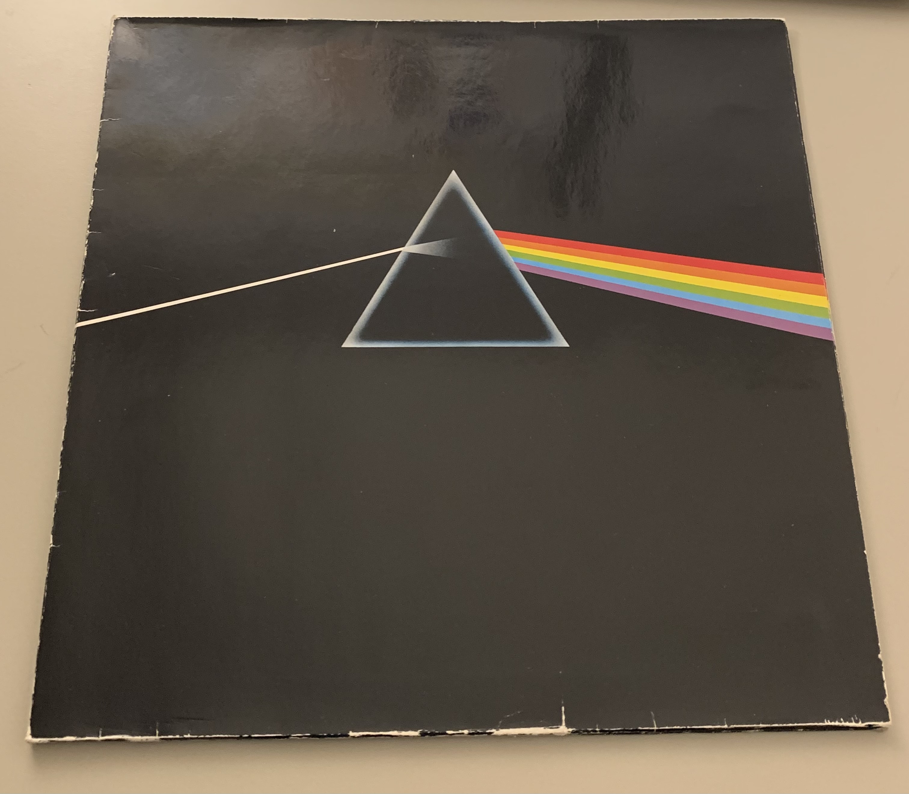

| Track | Zeit | Seite |
|---|---|---|
| Speak to me | 1:05 | 1 |
| Breath (In The Air) | 2:49 | 1 |
| On The Run | 3:45 | 1 |
| Time | 6:53 | 1 |
| The Great Git In The Sky | 4:43 | 1 |
| Money | 6:22 | 2 |
| Us And Them | 7:49 | 2 |
| Any Color You Like | 3:26 | 2 |
| Brain Damage | 4:46 | 2 |
| Eclipse | 2:12 | 2 |
Dieses Album ist im Jahr 1973 erschienen. Nachfolgend finden Sie ein Bild des Covers:
